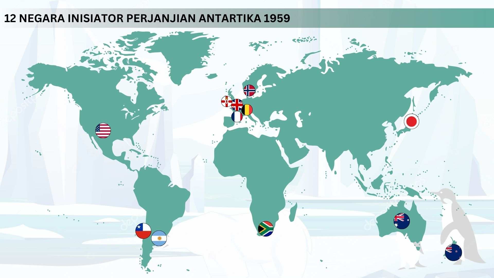

Perjanjian Antartika 1959
Terdapat 12 negara yang menginisiasi Perjanjian Antartika.

Siapa yang tidak mengenal Benua Antartika? Benua dengan iklim terdingin, tertutup salju sepanjang tahun, dan terletak di kutub selatan bumi ini selalu berhasil mencuri perhatian dunia. Kala itu, setelah Perang Dunia II usai, Amerika Serikat menunjukkan minat untuk mengklaim wilayah ini dengan mengirim pasukan dalam sebuah ekspedisi militer yang berlangsung selama setahun, dari 1946 hingga 1947 di wilayah tersebut. Tidak hanya Amerika Serikat, Inggris pun turut ingin mengklaim wilayah Semenanjung Antartika. Minat terhadap Antartika didorong oleh potensi sumber daya alam, khususnya minyak dan gas, yang diyakini terkandung di dalamnya. Menguasai wilayah ini dianggap akan memberikan keuntungan bagi negara yang berhasil mengklaimnya.
Namun, persaingan antar negara untuk menguasai Antartika menciptakan ketegangan dan potensi konflik. Semakin banyak negara yang tertarik untuk mengklaim benua ini, semakin tinggi pula risiko perselisihan antar mereka. Oleh karena itu, demi menjaga kedamaian dan menghindari perebutan wilayah yang berlarut-larut, negara-negara yang pada awalnya memiliki ambisi untuk menguasai Antartika akhirnya sepakat untuk menetapkan wilayah ini sebagai zona damai.
Kesepakatan tersebut tertuang dalam Perjanjian Antartika yang ditandatangani pada tahun 1959. Terdapat 12 negara yang menyepakati perjanjian ini di antaranya adalah Australia, Argentina, Amerika Serikat, Afrika Selatan, Belgia, Chili, Inggris, Jepang, Norwegia, Perancis, Selandia Baru, dan Uni Soviet. Di atas adalah peta sebaran negara tersebut. Melalui perjanjian ini ditetapkan bahwa Antartika akan menjadi wilayah bebas dari klaim kedaulatan oleh negara manapun. Wilayah ini dijaga untuk tujuan damai dan difokuskan sebagai kawasan riset ilmiah internasional. Dengan perjanjian ini, Antartika tidak hanya terbebas dari konflik militer dan klaim politik, tetapi juga menjadi simbol kerja sama global untuk kemajuan ilmu pengetahuan dan kelestarian lingkungan. Perjanjian ini memastikan bahwa eksplorasi dan penelitian di Antartika dilakukan untuk kepentingan bersama umat manusia, tanpa dominasi atau kepentingan politik dari satu negara tertentu.